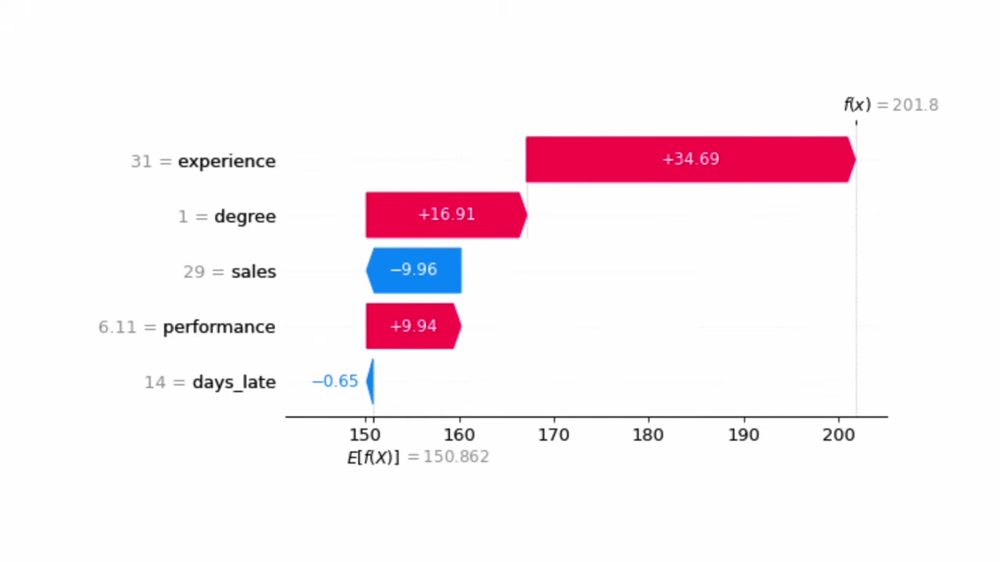

SHAP Values: Understand One Prediction
Companion to A Data Odyssey’s video · Conor O’Sullivan
A model predicts an employee’s annual bonus. The number looks unusually high, and someone asks: why did this employee receive this prediction? Saying that experience is the model’s most important feature does not quite answer the question. We want to know what this employee’s experience, qualifications, and other recorded details contributed to this particular number.
SHAP gives us a way to describe that prediction as a starting value plus a contribution from each feature. A positive contribution pushes the prediction upward from that starting point. A negative contribution pushes it downward. The contributions fit together: add them to the starting value and you recover the model’s output.
This series follows the SHAP playlist by Conor O’Sullivan of A Data Odyssey. We will first learn to read an explanation, then work out where its numbers come from, and finally produce and interpret explanations in Python. The mathematical chapters come before the programming chapter so each new idea has a place to land.
Start with the comparison
Before we explain why a prediction is high, we need a starting point. In a common SHAP setup, we choose a collection of reference examples, run the model on them, and average its predictions. This collection is called the background dataset. Its average model output is the baseline.
The baseline is an average prediction. It is not automatically the average observed bonus, the model’s intercept, or the prediction for an employee whose inputs are all zero. Those are different quantities. For now, think of it as the score we start from before revealing the details of the employee we want to explain.
The playlist’s first example makes this concrete. Its waterfall chart starts at approximately 150.86 and finishes at approximately 201.8, in the model’s bonus units. The gap of about 50.94 is shared among five features.


Read one bar before reading the whole chart
Look at 1 = degree. The 1 means that this employee has a degree. The +16.91 inside the bar is a different number: it is the contribution assigned to that feature value in this explanation. The observed input is a yes/no indicator; the contribution is measured in bonus units.
Now look at experience. The employee has 31 years of experience, and the explanation assigns that feature a contribution of about +34.69. Sales contributes about −9.96. That negative sign does not tell us that sales is bad, or that increasing sales would reduce the bonus. It tells us which direction this feature’s assigned contribution points in this explanation.
The remaining bars are approximately +9.94 for performance and −0.65 for days late. The displayed values are rounded, but the arithmetic is visible:
We now have a specific account of the prediction: the positive contributions from experience, degree, and performance outweigh the negative contributions from sales and days late. This is more useful than a list of feature names because it gives both direction and amount.
The explanation belongs to this employee
Another employee with a degree may receive a different contribution for degree. Models can use features together: a qualification might matter differently at different levels of experience. SHAP accounts for those combinations when dividing the difference from the baseline. It does not assign every degree-holder one permanent bonus adjustment.
There is also a difference between describing the model and establishing what happens in the world. The chart does not show that earning a degree would cause this person’s actual bonus to rise by 16.91. It describes the trained model’s output for the recorded employee, using the chosen reference. We will return to this distinction after learning the calculation.
What “Shapley” and “SHAP” mean
A Shapley value is a rule from cooperative game theory for sharing a total among participants. For a prediction, the participants are feature values, and the total we share is the prediction’s difference from its baseline. SHAP stands for SHapley Additive exPlanations; the Python package provides algorithms and plots for this kind of explanation.
The key question is still unanswered: why should degree receive 16.91 rather than 10 or 30? To understand that allocation, we will temporarily leave machine learning and divide a prize between two teammates. Once that small calculation is clear, we can apply exactly the same idea to features.
Follow the series
- Understand one prediction — the baseline, the bars, and what their signs mean.
- Work out the Shapley value — two teammates, three teammates, and the formula.
- Turn features into a sharing problem — average over unknown values and explain a complete prediction.
- Calculate SHAP values in Python — an Abalone regressor with a checked explanation.
- Read the main SHAP plots — move from one prediction to a collection of predictions.
- Know what the explanation can support — dependent features, causal claims, and misleading stories.
- Read violin plots and heatmaps — distributions and groups of similar explanations.
- Explain classification — log-odds, probabilities, and one explanation per class.
- Explain categorical features — one-hot columns, grouping, and CatBoost.
- Explain an anomaly — Isolation Forest scores, path lengths, and useful investigation leads.
Each chapter uses the relevant video, with timestamped source frames where they clarify the explanation. The Python chapters provide runnable scripts and results from those scripts; their fitted values can differ from the original recordings.